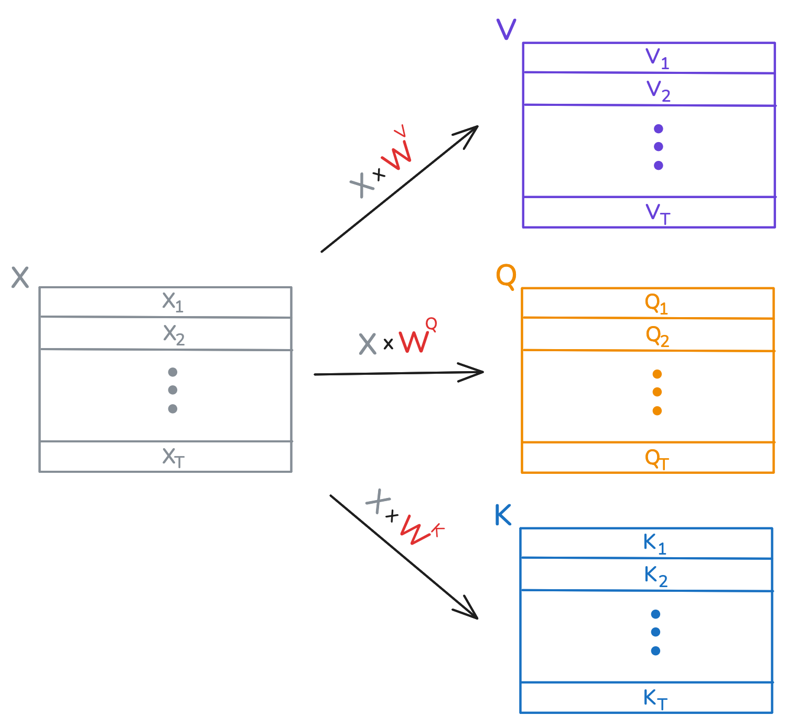
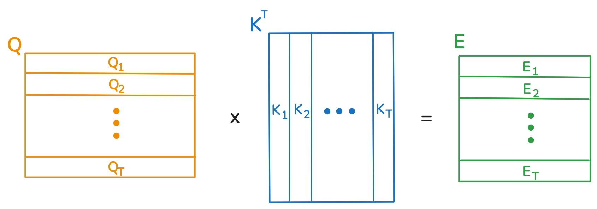
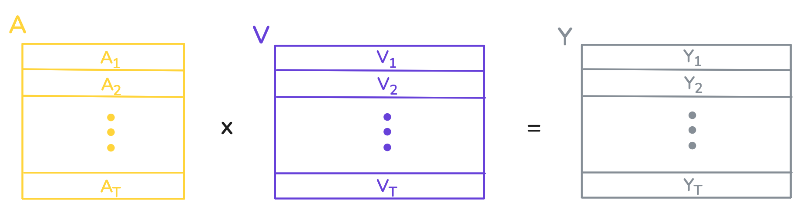
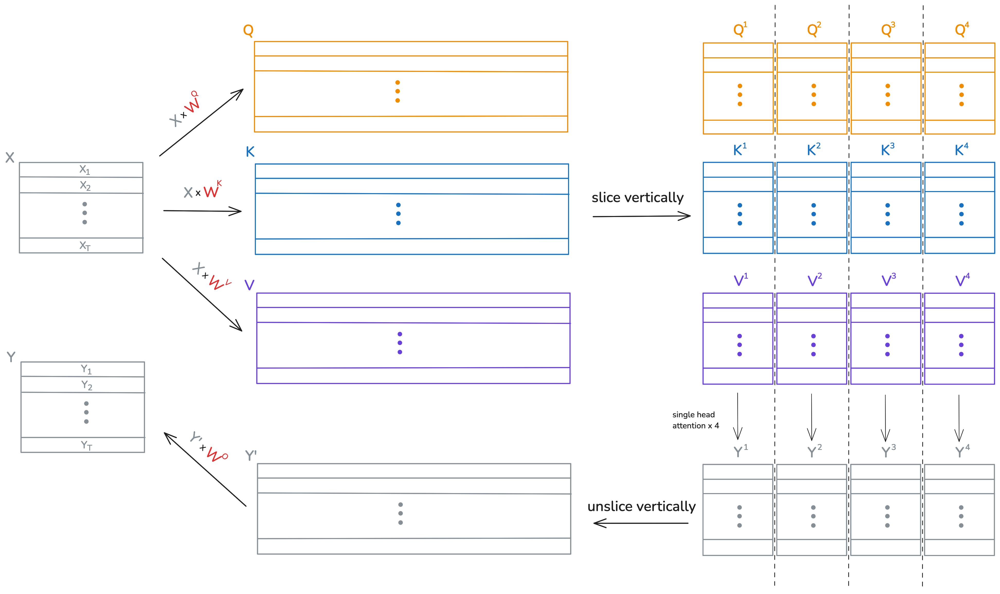

In this tutorial, you will learn both the theory and implementation of the transformer from the paper "Attention is All You Need". Then, you will see how to train such a model on machine translation from English to French, using the Multi30k dataset. This tutorial assumes that the reader understands deep learning fundamentals and has experience training models in PyTorch.
Part 1 will cover the implementation of the transformer encoder, which is the part of the model responsible for creating a rich representation of the English input sentence. This representation is used by the transformer decoder when generating the French version of the sentence. Part 2 discusses the decoder, data processing, model training, and inference using beam search and KV caching.
The source code is available here.
The Big Picture
Let us recall how a multilayer perceptron works. It accepts a single input, such as an image in vector form. The input then passes through a number of “layers”, where each layer outputs a new representation of its input. By the end, a final representation is obtained, and this final representation can be used for tasks such as classification.
The transformer differs from an MLP in that it accepts a sequence of inputs instead of a single input. Transformers are part of a class of deep learning models called sequential models.
While an MLP gives its single input a new representation, a transformer does so for each element in its input sequence. Furthermore, the new representation of each element depends on what other elements are in the sequence. To illustrate this point, consider the two sentences:
- I am writing a novel this year.
- The rollercoaster is a novel experience.
A transformer is likely to give the word “novel” a different representation depending on which of the two sequences is passed in, because the meaning of “novel” changes depending on its surrounding words. The mechanism that allows surrounding elements to be factored in is called attention, and it is a key concept to understand in the study of transformers.
Definition
Before discussing the inner workings of transformers, we will formally define the problem. Our training data is a large set of pairs of sentences, where each pair contains the English and French versions of a sentence. Our goal is to create and train a model that can take any English sentence as input and produce its French translation as output. This model is going to consist of embedding and positional layers, a transformer encoder, a transformer decoder, and a linear projection layer.
In order to pass in English sentences as input to the model, we will employ the following strategy:
- Define the English vocabulary to be the set of all English words in the training data.
- Arbitrarily assign to each word in the vocabulary a unique positive integer between 0 and the size of the vocabulary.
For example, the sentence “I like cats” might become the sequence \( \left[ \begin{array}{ccc} 132 & 84 & 552 \end{array} \right] \). While this will be our approach, note that there are other ways to encode sentences as sequences. For example, they can be treated as sequences of characters.
The same process is done for the French vocabulary, and the output of the model will be a sequence of integers representing French words.
Word Embeddings
The first layer in our model is the embedding layer. It has a learnable parameter called the “embedding table”, which is a two dimensional tensor. The number of columns in the table is a hyper-parameter \(H\), and we will set the number of rows to be the number of words in our English vocabulary. For our purposes, each row in the embedding table is the initial vector representation of some word in the English vocabulary.
The input to the embedding layer can be a tensor of any shape, as long as its entries are integers no bigger than the number of rows in the embedding table. The embedding layer replaces each integer in its input with its corresponding row from the embedding table. Thus, the shape of the output gains one extra dimension of size \(H\). Let’s look at an example. Suppose the vocabulary has size 8, the embedding layer is initialized with \(H=9\), and stores the following embedding table:
\[ \begin{bmatrix} 0.12 & -0.76 & 1.34 & 0.58 & -1.21 & 0.44 & -0.09 & 0.72 & -0.33 \\ -0.45 & 1.05 & 0.39 & -0.97 & 0.18 & -1.56 & 0.87 & 0.23 & -0.12 \\ 1.23 & -0.64 & 0.07 & 0.92 & -0.31 & 0.51 & -1.22 & 0.84 & -0.77 \\ -0.19 & 0.34 & 0.88 & -1.03 & 1.15 & -0.42 & 0.65 & -0.91 & 0.00 \\ 0.48 & -1.14 & 0.26 & 0.71 & -0.53 & 1.38 & -0.66 & 0.97 & -0.28 \\ 0.16 & 0.62 & -0.85 & 1.04 & -0.11 & -0.76 & 0.89 & -1.34 & 0.43 \\ -0.58 & 1.11 & 0.30 & -0.69 & 0.93 & -0.37 & -1.05 & 0.57 & 0.22 \\ 0.35 & -0.99 & 0.79 & 0.18 & -0.82 & 1.20 & -0.48 & 0.61 & -0.13 \end{bmatrix} \]
Then this layer would map \( \left[ \begin{array}{ccc} 0 & 6 & 4 \end{array} \right] \) to
\[ \begin{bmatrix} 0.12 & -0.76 & 1.34 & 0.58 & -1.21 & 0.44 & -0.09 & 0.72 & -0.33 \\ -0.58 & 1.11 & 0.30 & -0.69 & 0.93 & -0.37 & -1.05 & 0.57 & 0.22 \\ 0.48 & -1.14 & 0.26 & 0.71 & -0.53 & 1.38 & -0.66 & 0.97 & -0.28 \end{bmatrix} \]
While the input to the embedding layer can be of any shape, we care that it can map sequences of integers to sequences of vectors. Below is the code for the above example:
# Code
# The matrix stored by the embedding layer.
embedding_weights = torch.tensor([
[ 0.12, -0.76, 1.34, 0.58, -1.21, 0.44, -0.09, 0.72, -0.33],
[-0.45, 1.05, 0.39, -0.97, 0.18, -1.56, 0.87, 0.23, -0.12],
[ 1.23, -0.64, 0.07, 0.92, -0.31, 0.51, -1.22, 0.84, -0.77],
[-0.19, 0.34, 0.88, -1.03, 1.15, -0.42, 0.65, -0.91, 0.00],
[ 0.48, -1.14, 0.26, 0.71, -0.53, 1.38, -0.66, 0.97, -0.28],
[ 0.16, 0.62, -0.85, 1.04, -0.11, -0.76, 0.89, -1.34, 0.43],
[-0.58, 1.11, 0.30, -0.69, 0.93, -0.37, -1.05, 0.57, 0.22],
[ 0.35, -0.99, 0.79, 0.18, -0.82, 1.20, -0.48, 0.61, -0.13]
], dtype=torch.float)
# Initializing the embedding layer with the matrix above.
embedding_layer = nn.Embedding(num_embeddings = 8, embedding_dim = 9)
embedding_layer.weight.data = embedding_weights
# Example of above sequence input to embedding layer.
input = torch.tensor([0,6,4])
output = embedding_layer(input)
torch.set_printoptions(precision=2)
print(output)# Output
tensor([[ 0.12, -0.76, 1.34, 0.58, -1.21, 0.44, -0.09, 0.72, -0.33],
[-0.58, 1.11, 0.30, -0.69, 0.93, -0.37, -1.05, 0.57, 0.22],
[ 0.48, -1.14, 0.26, 0.71, -0.53, 1.38, -0.66, 0.97, -0.28]],
grad_fn=<EmbeddingBackward0>)Here’s a quick recap. In order for us to pass in sentences as sequences into our model, each word in the vocabulary is assigned a unique integer between 0 and the size of the vocabulary. The initial representation (also called the embedding) of the word \(i\) is the \(i\)’th row of the embedding table. The embedding layer takes a sequence of integers, and outputs a sequence of embeddings.
The Transformer Encoder
The job of the transformer encoder is to accept as input the sequence of word embeddings produced by the embedding layer, and to give each embedding in the sequence a new, enhanced representation. This new representation will depend not only on the embedding itself, but also on all other embeddings in the sequence.
As described in the paper, the encoder consists of N identical layers, each of which consists of 2 sublayers: the multi head attention layer, and a feedforward layer. In this section we will discuss both sublayers in detail.
The Single Head Attention Layer
Before talking about multi head attention, we must first understand single head attention. Thus we will first discuss what a single head attention layer looks like. The input to the single head attention layer is a tensor \(X \in \mathbb{R}^{T \times H}\), which represents a sequence of length \(T\) of word embeddings of size \(H\). The purpose of this layer is to map each word embedding \(X_i\) to a new representation \(Y_i\). The output of this layer is thus a tensor \(Y \in \mathbb{R}^{T \times H}\). We will see that \(Y_i\) is a function of all the word embeddings in \(X\), and not just \(X_i\) alone. This is what allows the new representation of each word to factor in the "context" of the sentence that the word is in.
The learnable parameters of this layer are tensors \(W^Q, W^K \in \mathbb{R}^{H \times D_k}, \text{ and } W^V \in \mathbb{R}^{H \times D_v}\). Here, \(D_k \text{ and } D_v\) are hyper-parameters to the layer, and notice that \(W^Q\) and \(W^K\) are the same shape. For this section we'll let \(D_v = H\), and the reason for this will become clear in the section on multihead attention.
Upon recieving the input \(X\), the single head attention layer computes three new matrices: \[\begin{equation} \begin{aligned} Q &= X \times W^Q,\\ K &= X \times W^K, \text{ and }\\ V &= X \times W^V. \end{aligned} \end{equation}\] Notice that \(Q,\; K, \text{ and } V\) each have the same number of rows as \(X\). You can think of each \(X_i\) as now having three new representations \(Q_i,\; K_i, \text{ and } V_i\), which are commonly known as the query, key, and value of \(X_i\). A visual depiction is provided below.
The new feature representation of \(X_i\) (aka \(Y_i\)) is going to be a weighted sum of the rows in \(V,\) and the number \(Q_i \cdot K_j\) is used to determine the contribution of row \(V_j\) to this sum. This number is the query of \(X_i\) dotted with the key of \(X_j\). Let's look at how this happens.
For each embedding \(X_i\) we define the vector \(E_i \in \mathbb{R} ^ T\), where \(E_{ij} = Q_i \cdot K_j\). Next we define \(A_i = \text{softmax}(E_i/\sqrt{D_k})\), where the division by \(\sqrt{D_k}\) is element-wise. Finally, we let \[ Y_i = \sum_{j=1}^{T} a_{ij} \cdot V_j,\]
where \(a_{ij}\) is the \(j\)th element of \(A_i\).
To recap, for each word embedding \(X_i\) we create a corresponding vector of weights \(A_i\), and then the rows of \(V\) are summed up according to these weights. The resulting sum is \(Y_i\), which is the new feature representation of \(X_i\). The weight assigned to \(V_j\) in this sum is determined by the dot product between the query of \(X_i\) and the key of \(X_j\) (though not exactly, because the weights are also then adjusted by the softmax).
I showed you how the new representation of one element in the sequence is obtained, but in practice matrix multiplication is used to compute all of them at once. First, a single matrix multiplication + softmax yields the weight vectors:
We are using the fact that matrix multiplication computes the dot products between the rows of \(Q\) and colums of \(K^T\), which is exactly what we want. After letting \(A = \text{softmax}(E/\sqrt{D_k}, \text{dim}=1)\), all of the weighted summations are computed
The Multi Head Attention Layer
A multihead attention layer with \(N\) heads is comprised of \(N\) independent single head attention layers. Like before, the input is a tensor \(X \in \mathbb{R}^{T \times H}\), which is passed through each single head attention layer independently. In this way, the embedding \(X_i\) receives \(N\) new representations \(Y_i^1,Y_i^2,\ldots,Y_i^N\). These representations are then concatenated, and the resulting vector has length \(N \times D_v\). Finally, this vector is passed through a linear layer to be projected back to the original size of \(X_i\), yielding \(Y_i\).
Multihead attention can be implemented using some clever tensor multiplication, which greatly simplifies the code and computations. This section will require a strong understanding of tensors, and may take some time to digest.
The learnable parameters of this layer are tensors \(W^Q, W^K \in \mathbb{R}^{H \times (D_k \times N)},\) \(W^V \in \mathbb{R}^{H \times (D_v \times N)} \) and \(W^O \in \mathbb{R}^{(D_v \times N)\times H }\). Observe that \(W^Q, W^K\) and \(W^V\) are like the tensors in single head attention, except that they have \(N\) times the number of columns. These are present in the constructor of the layer:
# Code
class MultiHeadAttention(nn.Module):
def __init__(self, num_heads, hidden_size, key_size, value_size):
super().__init__()
self.key_size = key_size
self.value_size = value_size
self.W_Q = nn.Parameter(torch.empty(hidden_size, key_size * num_heads))
self.W_K = nn.Parameter(torch.empty(hidden_size, key_size * num_heads))
self.W_V = nn.Parameter(torch.empty(hidden_size, value_size * num_heads))
self.W_O = nn.Parameter(torch.empty(value_size * num_heads, hidden_size))
for param in self.parameters():
nn.init.xavier_normal_(param)
def forward(self, X_Q, X_KV):
#
Q = slice_vertically(X_Q @ self.W_Q, self.key_size)
K = slice_vertically(X_KV @ self.W_K, self.key_size)
V = slice_vertically(X_KV @ self.W_V, self.value_size)
A = compute_attention_matrix(Q, K)
Z = A @ V
Y = unslice_vertically(Z) @ self.W_O
return YNow we'll shift our attention to the forward method of this layer. For now, assume that \(X_Q\) and \(X_{KV}\) are the same tensor (the reason for having two input tensors is explained in part 2). The queries, keys, and values of all \(N\) attention heads are captured in the tensors \(Q\), \(K\), and \(V\), which looks similar to the step in single head attention:
\[\begin{equation} \begin{aligned} Q &= X \times W^Q,\\ K &= X \times W^K, \text{ and }\\ V &= X \times W^V. \end{aligned} \end{equation}\]
The first \(D_k\) columns of \(Q\) and \(K\) correspond to the first attention head, the next \(D_k\) columns to the second, and so on. The function slice_vertically() is used to chop up \(Q\) and \(K\) every \(D_k\) columns. The same occurs for the values, except every \(D_v\) columns instead. Lines 24 and 26 then compute the single head attentions. The function unslice_vertically() concatenates the resulting attention heads, which are then multiplied by \(W^O\).
Below is an example visualization of this process, which uses 4 attention heads, and where \(D_v\) just happens to be equal to \(D_k\) so that the diagram is nicer.
The code for the functions used in the forward method is shown below. For now you may ignore the masking in the attention computation, as this will be explained in part 2 of the tutorial.
# Code
"""
Desciption:
This function computes the attention matrix between queries Q and keys K, which have shapes
(T, D_K) and (S, D_K) respectively. Here, T is the length of the input sequence used to create
Q, and S is the length of the source sequence producing K and V. Forthemore, D_K is the key
size. The attention computation is performed in batches of size N_batch, heads, which correspond
to the number of sequences in the batch, and the number of heads for each sequence.
Input:
Q - a tensor of shape (N_batch, heads, T, D_K)
K - a tensor of shape (N_batch, heads, S, D_K)
causal_mask - a T by T boolean causal mask, where True means do not attend.
key_padding_mask - an N by S boolean mask, where True means do not attend.
Output:
A - a tensor of shape (N_batch, heads, T, S)
"""
def compute_attention_matrix(Q, K, causal_mask=None, key_padding_mask=None):
E = Q @ K.transpose(-1, -2)
if causal_mask is not None:
E.masked_fill_(causal_mask, -torch.inf)
if key_padding_mask is not None:
E.masked_fill_(key_padding_mask[:, None, None, :], -torch.inf)
A = torch.softmax(E / (Q.shape[-1] ** 0.5), -1)
return A
"""
Desciption:
This function creates vertical slices out of a 2 dimensional tensor. For a tensor with R rows
and C columns, using a slice size of S yields a tensor of shape (C/S, R, S), where
the first dimension specifies the slice. Furthermore, any batch size (d0, d1, ... , dn) is
supported. The slice size (number of columns in the slice) must divide the number of columns.
Input:
X - a tensor of shape (d0, d1, ... , dn, R, C)
Output:
- a tensor of shape (d0, d1, ... , dn, C/S, R, slice_size)
"""
def slice_vertically(X, slice_size):
return X.unflatten(dim=-1, sizes=(-1, slice_size)).transpose(-2, -3)
"""
Desciption:
Suppose the input is a 3 dimensional tensor of shape (S, R, C). This function will treat the
input as a list of S tensors of shape (R, C) and concatenate them along the column dimension,
resulsting in a tensor of shape (R, C x S). It undoes the result from slice_vertically, meaning
that X = unslice_vertically(slice_vertically(X)). Furthermore, any batch size (d0, d1, ... , dn)
is supported.
Input:
X - a tensor of shape (d0, d1, ... , dn, S, R, C)
Output:
- a tensor of shape (d0, d1, ... , dn, R, C x S)
"""
def unslice_vertically(X):
return X.transpose(-2, -3).flatten(-2, -1)Full Encoder
With our multihead attention layer done, it is straightforward to implement the encoder. As in the paper, the encoder is comprised of a stack of identical layers, and each layer consists of two sublayers. The first sublayer contains the multihead attention, and the second sublayer contains a feedforward network. The sequence is passed into the feedforward network one input at a time. Both sublayers employ dropout, a residual connection, and layer normalization, which are techniques used to improve training stability. Below is the code for both sublayers.
# Code
class AttentionSubLayer(nn.Module):
def __init__(self, num_heads, hidden_size, key_size, value_size, dropout):
super().__init__()
self.multihead_attention = MultiHeadAttention(
num_heads, hidden_size, key_size, value_size
)
self.dropout = nn.Dropout(dropout)
self.layernorm = nn.LayerNorm(hidden_size)
# For self attention, X_Q and X_KV are the same. For cross attention, X_KV comes from the reference sequence.
def forward(self, X_Q, X_KV, causal_mask=None, key_padding_mask=None):
return self.layernorm(
self.dropout(
self.multihead_attention(
X_Q,
X_KV,
causal_mask=causal_mask,
key_padding_mask=key_padding_mask,
)
)
+ X_Q
)
class FeedForwardSubLayer(nn.Module):
"""The feedforward network is a two layer mlp with a relu activation in between.
Dropout applied to MLP output and residual connected added. Layer norm applied
before output.
Args:
hidden_size (int): Size of the hidden dimension.
feedforward_size (int): Size of the hidden layer of the MLP.
dropout (float): Dropout rate, which is applied after the MLP.
"""
def __init__(self, hidden_size, feedforward_size, dropout):
super().__init__()
self.feedforward = nn.Sequential(
nn.Linear(hidden_size, feedforward_size),
nn.ReLU(),
nn.Linear(feedforward_size, hidden_size),
)
self.dropout = nn.Dropout(dropout)
self.layernorm = nn.LayerNorm(hidden_size)
def forward(self, X):
return self.layernorm(self.dropout(self.feedforward(X)) + X)
The full encoder architecture consists of the embedding layer, positional encodings, and the stack of encoder layers. It is here that we discuss positional encodings. If you look closely, the output feature representation of any element in the input sequence does not actually change if you re-order the sequence. Try and see for yourself: follow the computations done for one element in the sequence, particularly through the attention layer. Did its position in the sequence get factored in?
This is a problem, because the words in the sentences
- I like reading classic novels,
- like classic reading I novels,
get the same feature representations, regardless of which permutation is passed into the encoder. Only the order of the output sequence changes.
To solve this problem, transformer encoder learns exactly one positional encoding for each position between 0 and the context size. This technically puts a limit on the length of the input sequence, as it can now have at most context_size elements. These encodings are added position-wise, after the input sequence passes through the embedding layer. They are implemented using an embedding layer, where the \(i\)th row of the table is the encoding for the \(i\)th position. The model is free to learn these positional encodings during training time as it sees fit.
Finally, we have everything we need to implement the full encoder:
# Code
class EncoderLayer(nn.Module):
def __init__(
self, num_heads, hidden_size, key_size, value_size, feedforward_size, dropout
):
super().__init__()
self.multihead_attention_sublayer = AttentionSubLayer(
num_heads, hidden_size, key_size, value_size, dropout
)
self.feedforward_sublayer = FeedForwardSubLayer(
hidden_size, feedforward_size, dropout
)
def forward(self, X, key_padding_mask):
X = self.multihead_attention_sublayer(X, X, key_padding_mask=key_padding_mask)
X = self.feedforward_sublayer(X)
return X
class TransformerEncoder(nn.Module):
def __init__(
self,
vocab_size,
context_size,
stack_size=6,
num_heads=8,
hidden_size=512,
key_size=64,
value_size=64,
feedforward_size=2048,
dropout=0.1,
):
super().__init__()
self.embeddings = nn.Embedding(vocab_size, hidden_size)
self.positional_encodings = nn.Embedding(context_size, hidden_size)
self.encoder_stack = nn.ModuleList(
[
EncoderLayer(
num_heads,
hidden_size,
key_size,
value_size,
feedforward_size,
dropout,
)
for _ in range(stack_size)
]
)
def forward(self, X, key_padding_mask):
X = self.embeddings(X) + self.positional_encodings(
torch.arange(X.shape[1], device=X.device)
)
for encoder_layer in self.encoder_stack:
X = encoder_layer(X, key_padding_mask)
return XThere are a few things to note. You may have already seen this when learning about neural network implementations, but PyTorch modules and functions can often handle whole "batches" at a time. The shape of input tensors is split into two sections, as (batch_shape, input_shape). The input_shape is the actual shape of the input, which in our case is a \(T \times H\) tensor representing a sequence of \(T\) word embeddings. The computations of the model are carried out independently for each input in the "batch", which in our case has size \(N\). Tensors of size \(N \times T \times H\) are thus passed into the encoder. One issue then, is that not all sentences are the same length. Therefore, batches are constructed with padding tokens at the end of each sequence, so that all sequences be the same length.
Part 1 Conclusion
In this part of the tutorial we saw the full implementation of the transformer encoder. We looked at how to represent sentences as sequences of ordinal encodings. Then, we saw how these sequences pass through the encoder's layers: word embeddings, positional encodings, and a stack of encoder layers. Part 2 of the tutorial introduces the transformer decoder, which uses the output of the encoder via cross-attention to produce a French translation.